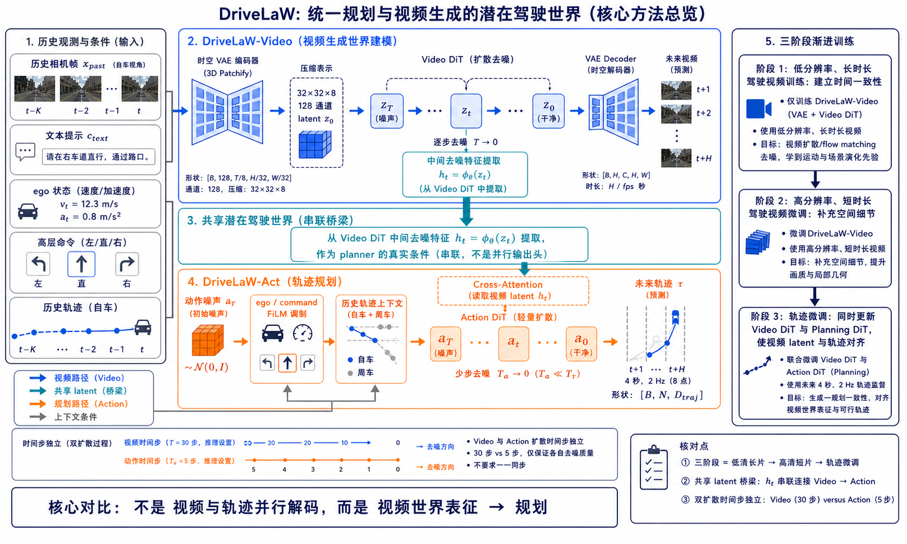
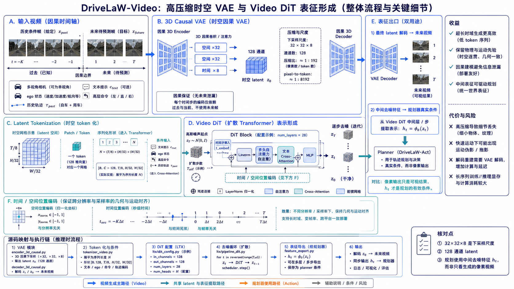
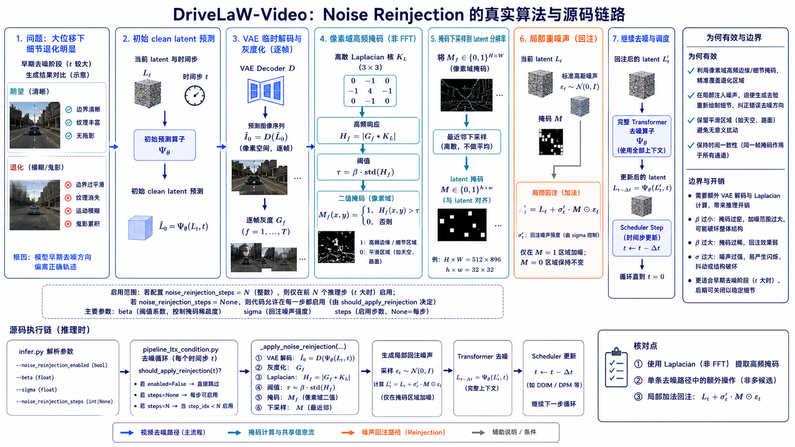
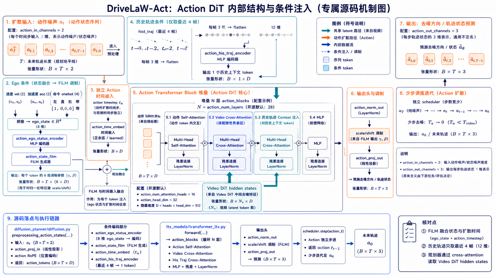
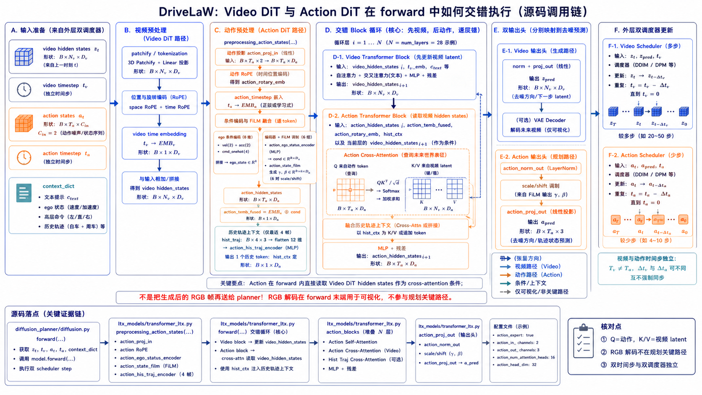
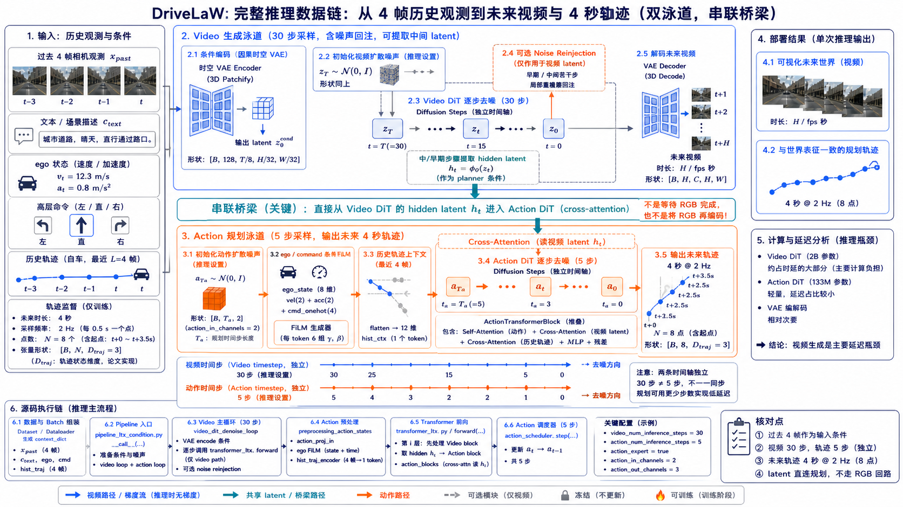

DriveLaW：统一规划与视频生成的潜在驾驶世界
一份把论文机制、公式、源码、实验与高密度图解交错组织的 academic 风格深度精读。核心问题不是“能不能同时生成视频和轨迹”，而是“规划是否真正读取了控制未来视觉演化的世界表征”。
一、先给结论
一句话总结：DriveLaW 把视频扩散模型的中间 latent 直接接到扩散规划器，而不是让视频预测与轨迹预测并行独立学习；再用三阶段渐进训练稳定这一共享表征。于是同一个 latent 同时携带场景外观、时空运动与驾驶先验，Video DiT 负责“这个世界接下来怎样变化”，Action DiT 负责“在这个世界里车辆怎样走”。
对新手而言，可以把它理解成：普通系统像两个司机各自看一张地图，一个画未来录像，一个写行驶路线；DriveLaW 让规划器直接读取负责“想象未来道路”的内部草稿，因此路线更容易和想象中的车辆、车道、交通参与者保持一致。

图1已经把论文的因果关系固定下来。后文不再按“论文一章、源码一章、图片一章”割裂，而是围绕四个机制逐一回答：输入是什么、张量怎样变化、公式在约束什么、源码哪里落地、实验哪一项证据支持它。
二、问题背景：为什么并行世界模型不够
自动驾驶世界模型的目标不只是生成看起来真实的未来帧，还要让未来具有可行动性：车辆会不会继续沿车道走，前车是否减速，行人是否穿越，红绿灯是否改变。视频生成天然擅长学习外观和时空规律，但它的像素质量不自动等于规划质量；规划器如果只从另一套 BEV、VLM 或静态特征读信息，两个输出头可能对同一场景形成不同的未来假设。
论文将这个问题称为 representation disconnect：视频生成使用的内部特征控制着场景演化，而规划轨迹并没有被强制锚定在这组特征上。DriveLaW 的结构性选择是把断开的两条支路改成串联：先用生成模型学习世界，再从 Video DiT 的去噪轨迹取 latent，最后让 Action DiT 以 cross-attention 读取它。
三、机制一：Video 先学会“世界如何演化”
3.1 时空 VAE：压缩不是删信息，而是换坐标系
论文采用高压缩时空 VAE，将视频映射到因果 latent 空间。报告中的 32×32×8 表示空间和时间方向的下采样尺度，128 表示 latent 通道数。它把原本极其昂贵的像素 token 序列压成更短的时空网格，使 Video DiT 能覆盖更长预测区间；代价是压缩过强时可能出现运动伪影，论文 Appendix D 也明确将 high-compression VAE 的 motion artifacts 列为限制。
人话解释：编码器把一段驾驶视频变成“世界状态草稿” z，解码器再把草稿恢复为视频。规划器不必处理全部像素，而是从这个更紧凑、已经被视频生成训练塑形的坐标系中学习。

图3中的因果边界非常重要。若编码器在时刻 t 偷看未来帧，模型离线指标可能变好，却会破坏闭环部署的因果性；DriveLaW 用 3D causal convolution 把每个时间步限制在过去和当前。与此同时，位置编码把空间坐标与秒级时间坐标带入 Transformer，让远处物体、车道线和自车运动不只被看成无序 patch。
3.2 Video DiT：去噪轨迹本身就是表征来源
扩散/flow-matching 视频模型不是一步从输入跳到未来，而是沿一组 latent 状态逐步修正：
每一步的 z_t 都同时含有“还没有决定的未来”和“已经形成的结构”。论文的关键做法是抽取中间特征：
人话解释：早期状态仍保留较强的场景布局与运动分支，后期状态更靠近可视像素细节。实验中 t=1 的规划 PDMS 为 89.1，t=5 为 86.9，而 t=10 只有 23.2；这不是“越干净越好”，而是决策更需要结构化、低冗余的世界状态。

噪声回注是视频侧对大运动退化的补救，不应被误读成规划器的随机探索。它发生在推理时的 Video pipeline，并通过局部高频掩码迫使生成先验重画车道边缘、车辆轮廓和细纹理；天空等平滑区域则尽量不受干扰。
四、机制二：Noise Reinjection 如何逐行落地
4.1 论文公式：先在像素域找细节，再回到 latent 域加噪
在当前去噪状态 L_t 上先做临时预测并解码：
随后逐帧灰度化并用 Laplacian 核检测高频：
像素域掩码下采样到 latent 网格得到 M，再做局部回注：
最后把 L′_t 送回完整 Transformer 去噪器得到下一状态。这里有三个容易混淆的点：第一，论文不是在 latent 上直接猜高频，而是先临时 VAE decode 到像素域；第二，M 是空间位置掩码，控制噪声落在哪里；第三，回注的目的不是增广训练数据，而是在错误的去噪分支上重新探索局部细节。
should_apply_reinjection = noise_reinjection_enabled
if should_apply_reinjection and noise_reinjection_steps is not None:
should_apply_reinjection = (i < noise_reinjection_steps)
if should_apply_reinjection:
latents = self._apply_noise_reinjection(
latents=latents, t=t, beta=noise_reinjection_beta,
sigma_prime=noise_reinjection_sigma, ...
)这段代码是“论文机制→工程开关”的直接证据：enabled 决定是否启用，steps 形成早期步窗口，beta 与 sigma 分别控制掩码阈值和回注强度；真正的 decode、灰度、Laplacian、插值和噪声合成集中在 _apply_noise_reinjection。
五、机制三：Action DiT 如何把世界表征变成动作
5.1 四类条件对应四种驾驶约束
Action DiT 的输入不是一个模糊的“条件向量”，而是四类有明确物理含义的 token/调制：动作噪声 a_t 表示当前待去噪的轨迹；ego 状态包含速度和加速度；高层命令告诉模型任务方向；历史轨迹提供连续性先验；Video DiT hidden states 则提供场景未来演化。

源码中的张量形状可以按一条具体样例理解：若 batch 为 B、未来动作 token 数为 T，动作序列先是 B×T×2；vel 与 acc 各是 B×2，命令 one-hot 与它们拼接成 B×8；最近四个历史轨迹点是 B×4×3，reshape 后是 B×12；经过编码后，ego 条件被复制到每个动作 token，并通过 FiLM 生成 6 组调制向量。
人话解释：FiLM 不是把速度、加速度简单拼到每个 token 后面，而是把当前车辆状态变成对中间通道的 scale/shift，告诉网络“同一个场景在不同速度下应该采取不同动作”。
5.2 Cross-attention：动作查询视频，而不是相反
ActionTransformerBlock 反复执行动作 token 的内部建模，并读取视频 hidden states。抽象写法是：
这条公式的关键不是注意力本身，而是方向：Q 来自动作 token，K/V 来自 Video DiT。于是每一个未来动作 token 都可以选择性读取“前方车辆、车道边缘、动态参与者”等与决策相关的世界证据。源码中 action_blocks 与 action_proj_out 分别对应这段计算和输出头。

ego_state = torch.cat([vel, acc, cmd_onehot], dim=-1)
ego_emb = self.action_ego_status_encoder(ego_state)
state_film_6D = self.action_state_film(ego_emb).view(B, T, 6, -1)
temb_time_6D = action_temb.view(B, T, 6, -1)
temb_fused = (state_film_6D + temb_time_6D).reshape(B, T, -1)
hist4 = hist_traj[:, -4:, :]
hist_flat12 = hist4.reshape(B, 12)
hist_ctx = self.action_his_traj_encoder(hist_flat12)这个实现解剖解释了为什么 Action DiT 是“轻量动作解码器”而不是第二个世界模型：世界建模的容量主要由 Video DiT 提供，Action DiT 只需在已有 latent 坐标系中学习条件轨迹分布。
六、源码机制：一次 forward 里到底发生什么
读源码时最容易犯的错，是把 README 的“video latent conditioning”想象成两个进程之间传一份最终视频。实际链路更细：preprocessing_action_states 先准备动作 token、时间嵌入、ego FiLM 和历史上下文；主 forward 进入 block 循环后，video hidden states 与 action hidden states 按 block_idx 交错更新。动作 block 的 cross-attention 读取当前视频 hidden states，所以规划在每个 forward 中都被放在“视频模型当前相信的世界状态”上。
这也解释了“共享 latent”的准确含义：共享的是表示接口和计算依赖，不是所有权重相同。Video DiT 仍然有自己的视频输出投影，Action DiT 仍然有自己的动作输出投影；两个 scheduler 也各自推进不同扩散变量。把这件事说清楚，才能正确理解论文所谓 unified，而不会夸大成完全参数共享。
action_temb_fused, action_embedded_timestep, action_rotary_emb, action_hidden_states = preprocessing_action_states(...)
...
action_hidden_states = self.action_blocks[block_idx](
hidden_states=action_hidden_states,
encoder_hidden_states=hidden_states,
...
)
...
action_output = self.action_proj_out(action_hidden_states)
从工程角度，这种链式结构有一个直接收益：不需要把 RGB 视频完整生成完再交给规划器，减少重复编码；但也有一个直接代价：Video DiT 是 2B 级模型，规划器约 133M，整体延迟主要由视频侧决定。论文报告视频 30 步、轨迹 5 步，说明 Action DiT 的轻量化是建立在共享视频表征之上的。
七、三阶段训练：为什么不能一开始就端到端乱学
前两阶段先建立可迁移的驾驶世界表征，而不是急着拟合轨迹。论文报告先用低分辨率、长时长片段训练时间一致性，再用高分辨率、短片段补空间细节；这种 curriculum 把时间一致性与空间细节拆开。第三阶段再将历史四帧与未来 4 秒、2 Hz 轨迹配对，引入 Action DiT，并同时更新 Video DiT 与 Planning DiT，让 shared latent 同时满足“能生成合理未来”和“能支持安全轨迹”。
这些公式是训练意图的抽象表达，权重 λ 的具体数值不在论文正文中给出。消融结果提供了互补证据：没有第一阶段时 FID 仍是 5.0，但 FVD 从完整方案的 81.3 上升到 109.3，说明短期画质尚可、长时域时间一致性明显变差；没有第二阶段时 FVD 为 93.2，说明仅靠视频预训练不足以把表征变成高质量规划条件。
八、实验：从分数回到机制
8.1 视频生成：FID/FVD 分别在测什么
| 方法 | FID↓ | FVD↓ |
|---|---|---|
| DriveGAN | 73.4 | 502.3 |
| DrivingGPT | 12.8 | 142.6 |
| Epona | 7.5 | 82.8 |
| DriveLaW | 4.6 | 81.3 |
FID 更偏向单帧/空间分布质量，FVD 更关心视频级时空分布。DriveLaW 的 FID 4.6 说明车辆、道路、背景等视觉分布更接近真实数据；FVD 81.3 虽只比 Epona 82.8 低 1.5，但在视频指标已较难改善的区间仍取得领先，结合噪声回注和长时域预训练，可以把它解释为时间一致性与细节保真的共同收益，而不能只归因于某一个模块。
8.2 NAVSIM：规划指标反映“可行、避碰、舒适、进度”
| 表示条件 | NC↑ | DAC↑ | TTC↑ | Comfort↑ | EP↑ | PDMS↑ |
|---|---|---|---|---|---|---|
| BEV Features | 97.6 | 93.0 | 92.9 | 100 | 79.1 | 84.1 |
| VLM Hidden State | 98.1 | 94.7 | 94.2 | 100 | 80.9 | 86.5 |
| Video Latents | 99.0 | 97.1 | 96.7 | 100 | 81.3 | 89.1 |
Video latent 相比 BEV 提升 PDMS 5.0，相比 VLM 提升 2.6；它不是证明 BEV/VLM 没用，而是说明在相同扩散规划器下，已经参与未来视频生成的 latent 更贴近驾驶决策所需的时空结构。主结果中 DriveLaW 的 PDMS=89.1，比 Epona 86.2 高 2.9，比 DiffusionDrive 88.1 高 1.0；论文还强调没有额外 RL post-training 或 learned scorer 后处理。
8.3 去噪步消融：为什么中间表征优于最终像素
t=1、t=5、t=10 的差异把“生成质量”和“决策质量”分开了。t=10 时 NC=81.7、DAC=63.4、TTC=67.6、Comfort=0、EP=15.4，PDMS=23.2；说明后期 latent 可能已经被大量像素细节和冗余占据，却不再是最有效的规划摘要。这个结果支持论文的表示学习视角：中间去噪特征不是未完成的残次品，而是一个兼具布局、运动和语义的决策坐标系。
九、边界、局限与我的判断
作者自述局限 1：高压缩 Video-VAE 可能产生运动伪影。压缩比带来效率，但在快速运动、细小目标和长时域累计误差上，latent 解码可能牺牲局部结构。
作者自述局限 2：推理延迟仍是问题。2B 视频生成器即使共享 latent，也需要较多去噪步；Noise Reinjection 还会引入临时 VAE decode 与 Laplacian 计算。
独立判断：串联结构把规划锚定到生成世界，但也让规划器继承视频模型的系统性偏差。如果 Video DiT 对某个长尾交通参与者产生错误但高置信的未来，Action DiT 可能因为 cross-attention 而更一致地执行错误判断。未来需要不确定性估计、风险敏感规划或多假设 latent，而不是只继续放大视频模型。
另一个边界：论文的实验主要证明离线视频质量与 NAVSIM 规划性能，真实车辆闭环中的传感器延迟、执行器约束、天气迁移和分布外交通规则仍需单独验证。报告不把 NAVSIM 分数等同于道路安全保证。
十、面向新手的最终复盘
- 先记住桥：DriveLaW 的创新不是“视频+轨迹”两个名词相加，而是 Video DiT 中间 latent → Action DiT cross-attention 的真实串联。
- 再记住算法：噪声回注先临时解码到像素域找 Laplacian 高频掩码，再只在掩码区域加噪，重新走完整去噪。
- 最后记住训练：先建立世界表征，再训练动作解码，最后联合对齐；实验的 FVD、PDMS、表示与去噪步消融共同支持这条设计逻辑。
十一、证据与源码索引
- 论文全文与 TeX：
report_source/paper.html、report_source/tex/sec/3_method.tex、report_source/tex/sec/4_experiment.tex - 官方仓库：
DriveLaW-Act、DriveLaW-Video，仓库 HEAD：243e0e41148bdb1ae39ce1adf17d026e7cbd4348 - 噪声回注：
DriveLaW-Video/Infer/diffusers/src/diffusers/pipelines/ltx/pipeline_ltx_condition.py:736、:1473-1497 - Action 条件预处理：
DriveLaW-Act/navsim/agents/videodrive/video_models/diffusion_planner/diffusion.py:297-352 - Action block 与输出：
DriveLaW-Act/navsim/agents/videodrive/video_models/ltx_models/transformer_ltx.py:635-718 - 图片 provenance 与 SHA-256：
evidence/image_manifest.tsv；统一风格合同：evidence/style_contract.md
本报告中的8张正式图均来自当前任务会话原生 ImageGen，原始文件保留在 $CODEX_HOME/generated_images/01a06125-0224-7223-8da7-9418fc6b265e/，正式副本位于 assets/figures/。